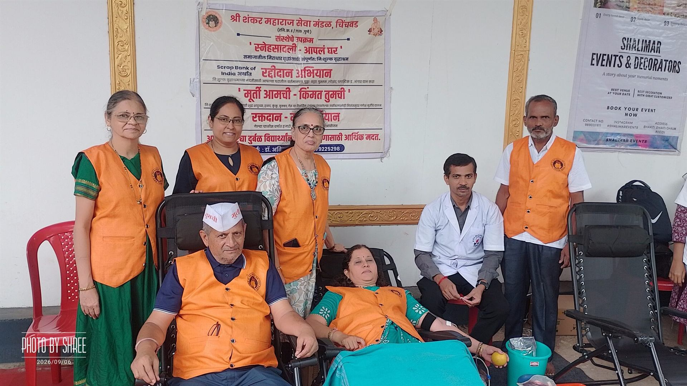

Dr. Avinash Vaidya
Founder & President
Has led the Mandal’s blood donation movement for nearly 40 years and personally joins the door-to-door Raddi collection that funds Snehsavali.

Four decades of medical service, social commitment and selfless contribution.
Dr. Avinash Vaidya and Dr. Mrs. Manali Vaidya have dedicated nearly 40 years to medical practice and social welfare in Chinchwad, while keeping a simple life and giving their time, energy and own resources to society.
Founder & President
Has led the Mandal’s blood donation movement for nearly 40 years and personally joins the door-to-door Raddi collection that funds Snehsavali.
Founder
M.B.B.S. from Government Medical College, Miraj, with postgraduate training in Pathology. She has provided medical services in Chinchwad Gaon, Pune, for 40 years.
The tradition of medical service continues across the family, with members who have pursued postgraduate studies and work in healthcare.
Driven by a strong sense of social responsibility, they have organised more than 1,800 blood donation camps, helping make blood available to patients who need it.
With deep devotion to Shri Shankar Maharaj, they established Shree Shankar Maharaj Seva Mandal, Chinchwad, registered with the Charity Commissioner under Reg. No. E 7129 / Pune.
Through the Mandal they run a completely free old-age home for destitute and unsupported senior citizens, built to offer shelter, care, dignity and a loving environment.
Together with their colleagues, they personally collect old newspapers and scrap door to door. This income meets more than half of the home’s annual running expenses.
A display of finely crafted Ganesh idols of pure Shadu Mati and natural colours. Devotees choose an idol and give an optional, anonymous donation that supports social welfare work.
Both Snehsavali and Murti Amchi Kimat Tumchi have run continuously for 13 years and are now well-recognised social initiatives.
They have consistently extended medical help to poor, needy and economically disadvantaged patients.
They have given financial help to students from economically weaker families so they can continue into higher education and build a better future.
To live not only for oneself, but also to contribute meaningfully to the lives of others.
Their work has been recognised by the Rotary Club of Nigdi, Shri Datt Seva Mandal, the All India Women’s Conference and many other organisations.